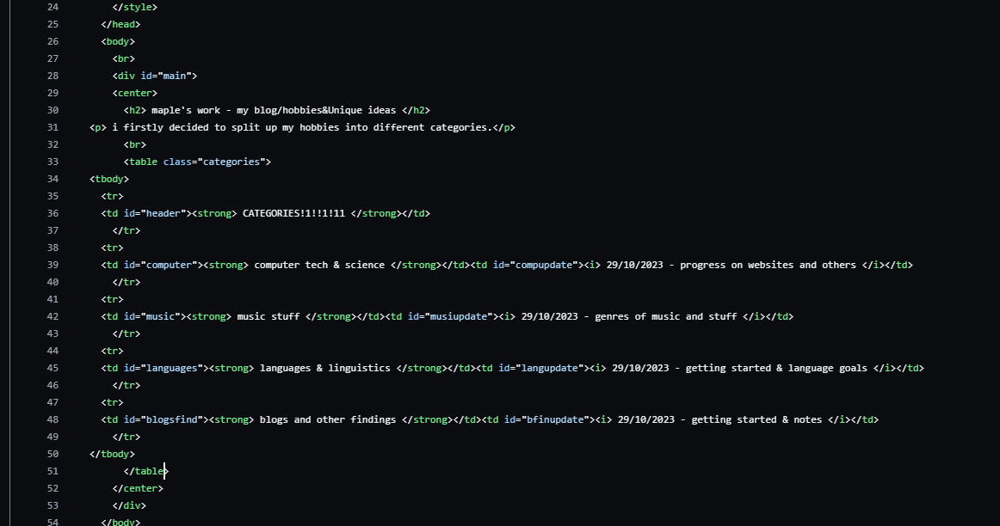

29/10/2023 COMPUTER SCIENCE!!11
computer science is one of the most fascinating things to me, and thats why your on my website right now.
basically ill be posting the insides of stuff i do, blah blah blah.
anyways time to get into that-
for this section of the site i will be bringing back old 2000's style stuff and making it more neat. for exampel id started using-
tr's and td's for table stuff which is still sometimes used but not too often, and things like marquee which has kinda been trashed.
|

code from blog's main page with TD's and TR's |
GOOD QUESTION!
firstly, marquee looks like this.
ok yeah i think ive seen those on old websites, what about td and tr?
although this function is still used in modern days, it was used alot in old days like for stuff like myspace! example below. (there are multiple functions other than TD and TR attached but-
you can look in the code for yourself.
| Test | Test2 |
|---|---|
| untest1 | untest2 |
woah thats cool
ik. you can do alot with these.
thats it for now, im gonna go make the other updates to the other blog pages.
return to blog homepage next post